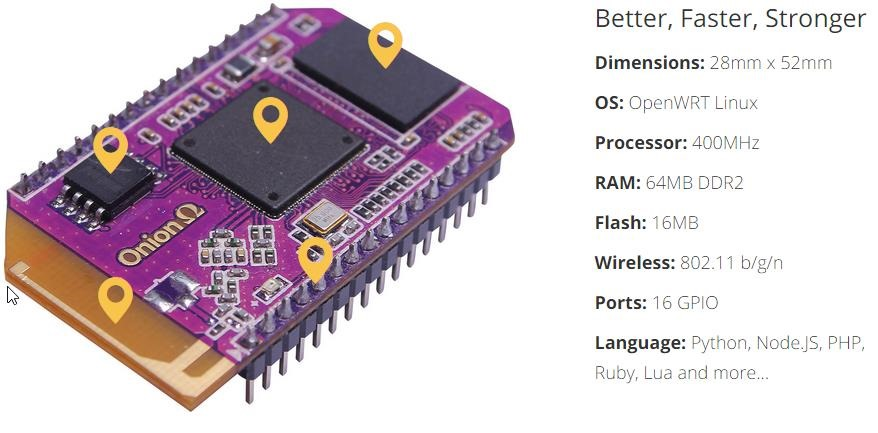
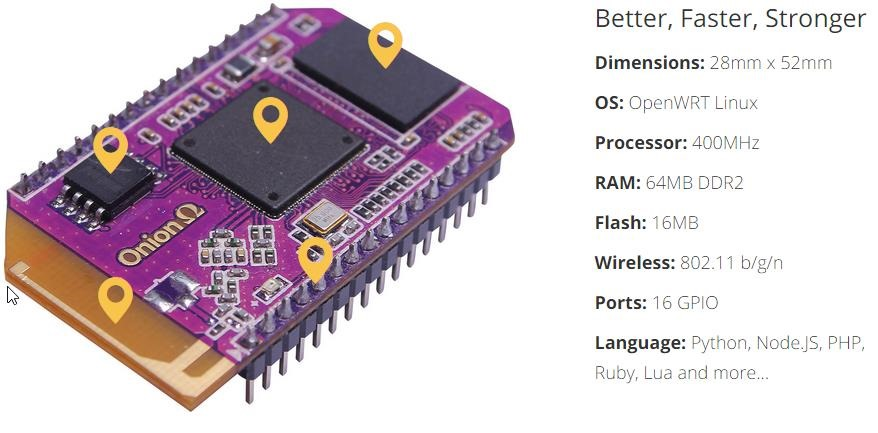
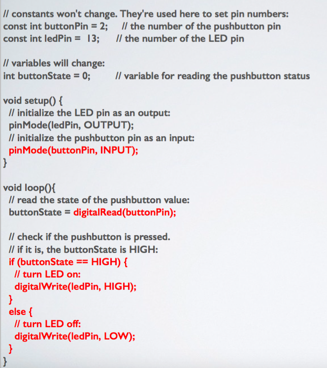

SI TBMA: Microcontroller Workshop: Day 1
SI TBMA: Microcontroller Workshop: Day 1
SI TBMA: Microcontroller Workshop: Day 1
SI TBMA: Microcontroller Workshop: Day 1
Slides are here:
https://mhellar.github.io/saam_mcu/day1
- What is a Microcontroller?
- Introduction to the Arduino
- Your First Electronic Circuit
- Programming the Arduino
- Digital Output
- Case study: Life Death/Knows Doesn't Know, Bruce Nauman
- Digital Input
- Analog Input and Output
- Introduction to serial communication
- Controlling motion with servos and stepper motors
- Case study: RV (Room Vehicle) PROTOTYPE, Greg Lynn
Topics for Today:
WHAT IS A MICROCONTOLLER:
We know what a computer looks like. It usually has a keyboard, monitor, CPU (Central Processing Unit), printer, and a mouse. These types of computers, like the Mac or PC, are primarily designed to communicate (or “interface”) with humans.
WHAT IS A MICROCONTOLLER:
There are also small computers all around,quietly running programs and quietly doing calculations. These computers are in your car, on the Space Shuttle, a small toy, and maybe even inside your refrigerator.


WHAT IS A MICROCONTOLLER:
It has built in "I/O" (input/output) capabilities. So it can read and write digital and analog values/states, and connect directly to the "real world". A microcontroller, unlike a microprocessor can connect directly to switches, buttons, LCD displays, LEDS, relays and serial ports
WHAT IS A MICROCONTOLLER:
Microcontrollers are generally used for low to medium complexity, specific tasks in equipment. This contrasts with the powerful, number crunching microprocessors used in PCs which handle a variety of software applications.
WHAT IS A MICROCONTOLLER:
Microcontrollers are often used in portable devices which run on batteries, e.g. digital cameras. So they are often low powered with a small current consumption (unlike the heat sinked, fan cooled microprocessor in a desktop computer)
WHAT IS A MICROCONTOLLER:
Compared to the microprocessor in a PC, the RAM within a microcontroller can typically range from 4mb down to as little as 1k
WHAT IS A MICROCONTOLLER:
The program in a microcontroller is usually stored in EPROM or EEPROM. This is a type of non volatile (program doesn't disappear when the device is turned off) memory which can be continuously wiped and rewritten.


 

ARDUINO!

WHAT IS ARDUINO:
Arduino is an open source physical computing platform based on a simple input/output (I/O) board and
a
development environment that implements the Processing language (www.processing.org).
Arduino
can be used to develop standalone interactive objects or can be connected to software on your
computer
(such as Flash, Processing, NodeJS or Max/MSP). !
Arduino is composed of two major parts:
- The Arduino board, which is the piece of hardware you program to control your projects.
- The Arduino IDE, the piece of software you run on your computer. You use the IDE to create a sketch(a program) that you upload to the Arduino board. The sketch tells the board what to do.
ARDUINO TERMS
- “sketch” – a program you write to run on an Arduino board
- “pin” – an input or output connected to something. e.g. output to an LED, input from a knob.
- “digital” – value is either HIGH or LOW. (aka on/off, one/zero) e.g. switch state
- “analog” – value ranges, usually from 0-255. e.g. LED brightness, motor speed, etc.
THE ARDUINO HARDWARE
The Arduino board is a microcontroller board, which is a small circuit (the board) that contains a whole computer on a small chip (the micro- controller). This computer is at least a thousand times less powerful than the MacBook I’m using to write this, but it’s a lot cheaper and very useful to build interesting devices.
THE ARDUINO HARDWARE
The Arduino design team have placed on this board all of the components that are required for this micro controller to work properly and to communicate with your computer. There are many versions of this board; the one we’ll use throughout this book is the Arduino Uno, which is the simplest one to use and the best one for learning on.
THE ARDUINO HARDWARE
These can be inputs or outputs, which is specified by the sketch you create in the IDE.
THE ARDUINO HARDWARE
These dedicated analogue input pins take analog values (i.e., voltage readings from a sensor) and convert them into a number between 0 and 1023 we’ll look at this next class
THE ARDUINO HARDWARE
These are actually six of the digital pins that can be reprogrammed for analog output we’ll look at this in the next class
THE ARDUINO HARDWARE
These power pins are capable or providing 5.5 volts or 3.3 volts of power. Also there are two pins that are capable of providing ground any components that you attach to the controller.
THE ARDUINO HARDWARE
The USB connector connects the controller to you computer allowing you to program it. The USB connection also provides power.
THE ARDUINO HARDWARE
The power connector allows you to power your controller independently either with a battery or a power supply.
THE ARDUINO HARDWARE
THE ARDUINO IDE

- Like a text editor
- View/write/edit sketches
- But then you program them into hardware
THE ARDUINO SOFTWARE (IDE)
The IDE (Integrated Development Environment) is a program running on your computer that allows you to write sketches for the Arduino board in a simple language modeled after the Processing (www.processing.org) language.
THE ARDUINO SOFTWARE (IDE)
The magic happens when you press the button that uploads the sketch to the board: the code that you
have
written is translated into the C language (which is generally quite hard for a beginner to use),
and
is compiled into a language that the micro controller understands.
This last step is quite important, because it’s where Arduino makes your life easy by
hiding
away as much as possible of the complexities of programming microcontrollers.
The programming cycle on Arduino is basically as follows:
- Plug your board into a USB port on your computer.
- Write a sketch that will make your board do something.
- Upload this sketch to the board through the USB connection and wait a couple of seconds for the board to restart.
- The board executes the sketch that you wrote.
LESSON 1 - BASIC HOUSEKEEPING
This first lesson won't really teach programming the Arduino. It’s meant to introduce you to
building
a basic electrical circuit.
It will also get us prepped for building the rest of the exercises throughout the class.
LESSON 1 - Gather The Parts
1 resistor (bands are red,red,violet, gold)
1 resistor (bands are red,red,violet, gold)

LESSON 1 - Gather The Parts
3 jumper wires. 2 Long(yellow,green), 1 short(white)
LESSON 1 - Gather The Parts
1 breadboard
LESSON 1 - Gather The Parts
1 USB Cable
LESSON 1 - Gather The Parts
1 Arduino
LET MAKE SOME CIRCUITS!
Solderless Breadboard
Step 1: connect Arduino to computer with USB cable
Step 2: connect one side green wire to the ground pin(marked GND)
Connect the other side of the green wire to the ground strip on the breadboard marked with a minus sign -
Step 3: connect one side of the yellow wire to the 5 volt pin(marked 5V)
Connect the other side of the green wire to the ground strip on the breadboard market with a plus sign +
Step 4: connect one side of the short white to any socket along the red strip
Connect the other side of the short wire to any socket in the row numbered 11
Step 5:Place the resistor on one socket in the strip marked with a negative sign -
Place the other end of the resistor in row 10
Step 6: The LED has a long wire and a short wire place that in the same row as the short white wire #11
Place short end of the LED in the same row as the resistor #10
You should have Light!
What’s going on here?
An electric circuit is a closed loop where electric current can flow. Electricity flows like water from Ground(GND) to Positive(VCC).
As the current passes though a component such as an LED it causes it to light up.
The Arduino is acting as our battery providing 5 volts of electricity.
An electric circuit is a closed loop where electric current can flow. Electricity flows like water from Ground to Positive Voltage
As the current passes though a component such as an LED it causes it to light up.
5 Volts is too much electricity for the LED and will burn it out!
So before we send electricity to it we need to place a resistor in front of it to limit the electrical current.

LED Resistor calculator: http://led.linear1.org/1led.wiz
LESSON 2 -REALLY GETTING STARTED WITH ARDUINO
This lesson will basically get you up and running using the Arduino software and uploading a sketch to the Arduino board. Once you've completed this step we can continue to the really interesting stuff, which is when we start writing our own sketches!
BLINKING AN LED

Parts List:
- 1 long green wire
- 1 long yellow wire
- 1 Led(your choice of color)
- 1 resistor (bands are red,red,violet, gold)
- 1 Breadboard
- 1 Arduino and USB cable
- *Most of the parts from exercise 1
1 Connect GND on the arduino to the ground terminal on the breadboard

2 Connect Pin 13 on the to the same row as the long lead of the LED on the breadboard

3 Make a connection between the ground strip and the short lead of the LED
Once the LED is connected, you need to tell Arduino what to do. This is done through code - that is, a list of instructions that we give the micro- controller to make it do what we want.
THE ARDUINO IDE
Open the Arduino IDE from the Applications folder.
THE ARDUINO IDE
Blink Code
// Example 01 : Blinking LED
int LED = 13; // LED connected to digital pin 13
void setup()
{
pinMode(LED, OUTPUT); // sets the digital
// pin as output
}
void loop()
{
digitalWrite(LED, HIGH); // turns the LED on
delay(1000); // waits for a second
digitalWrite(LED, LOW); // turns the LED off
delay(1000); // waits for a second
}
USING ARDUINO

- Write your sketch
- Press Compile button (to check for errors)
- Press Upload button to program Arduino board with your sketch
CODE:STEP BY STEP
Arduino expects two functions to exists—one called
setup() and one called loop().
setup() is where you put all the code that you want to execute once at the beginning of your
program
loop() contains the core of your program, which is executed over and over again.
When you power up the board, the code runs; when you want to stop, you just turn it off.
// Example 01 : Blinking LED()
A comment is a useful way for us to write little notes.
The
preceding title comment just reminds us that this program, Example 01, blinks an LED.
void setup()
This line tells Arduino that the next function will be called setup().
pinMode(LED, OUTPUT); // sets the digital // pin as output
pinMode tells Arduino how to configure a certain pin. Digital pins can be used either as INPUT or OUTPUT.
In this case, we need an output pin to control our LED, so we place the number of the pin and its mode inside the parentheses.
pinMode is a function, and the words (or numbers) specified inside the parentheses are arguments. INPUT and OUTPUT are constants in the Arduino language. }
loop() is where you specify the main behavior of your interactive device. It will be repeated over and over again until you switch the board off.
digitalWrite(LED, HIGH); // turns the LED on
As the comment says, digitalWrite() is able to turn on (or off) any pin that has been
configured
as an OUTPUT.
The first argument (in this case, LED) specifies which pin should be turned on or off
(remember
that LED is a constant value that refers to pin 13, so this is the pin that’s switched).
The second argument can turn the pin on (HIGH) or off (LOW).
Imagine that every output pin is a tiny power socket, like the ones you have on the walls of your
apartment. American ones
are 110 V, and Arduino works at a more modest 5 V.
The magic here is when software becomes hardware. When you write digitalWrite(LED, HIGH),
it
turns the output pin to 5 V, and if you connect an LED, it will light up.
So at this point in your code, an instruction in software makes something happen in the
physical
world by controlling the flow of electricity to the pin. Turning on and off the pin at will now let
us
translate these into something more visible for a human being; the LED is our actuator
delay(1000); // wait for a second
Arduino has a very basic structure. Therefore, if
you
want things to happen with a certain regularity, you tell it to sit quietly and do nothing until it
is
time to go to the next step. delay() basically makes the processor sit there and do nothing for the
amount
of milliseconds that you pass as an argument. Milliseconds are thousands of seconds; therefore,
1000
milliseconds equals 1 second. So the LED stays on for one second here.
digitalWrite(LED, LOW); // turns the LED off
This instruction now turns off the LED
that
we previously turned on. Why do we use HIGH and LOW? Well, it’s an old convention in digital
electronics.
HIGH means that the pin is on, and in the case of Arduino, it will be set at 5 V. LOW means 0 V.
You
can also replace these arguments mentally with ON and OFF.
delay(1000); // wait for a second
Here, we delay for another second. The LED will be
off
for one second.
}
This closing curly bracket marks end of the loop function.
Before we move on to the next section, I want you to play with the code. For example, reduce the
amount
of delay, using different numbers for the on and off pulses so that you can see different blinking
patterns.
In particular, you should see what happens when you make the delays very small, but use
different
delays for on and off . . . there is a moment when something strange happens; this “something” will
be
very useful when we learn about somethng called pulse-width modulation.
Random Blink
//Random Delay
//
int LED = 13; // LED connected to// digital pin 13
int i; // Variable to hold our random value
void setup()
{
pinMode(LED, OUTPUT); // sets the digital pin as
output
}
void loop()
{
i = random(1, 1000); // generate a random value every
loop cycle
digitalWrite(LED, HIGH); // turns the LED on
delay(i); // pause for the duration of variable i
digitalWrite(LED, LOW); // turns the LED off
delay(i); // waits for a second the duration of
variable i
}
ITERATIVE DELAY
/// Blink with for loop
//
int LED = 13; // LED connected to digital pin 13
int i; // Variable to hold our random value
void setup()
{
pinMode(LED, OUTPUT); // sets the digital
// pin as output
}
void loop()
{
// set I to 1; while i is less that 100 increment i by one
for(int i = 1;i <=100; i++){
digitalWrite(LED, HIGH); // turns the LED on
delay(i); // set delay based on the value of i
digitalWrite(LED, LOW); // turns the LED off
delay(i); // set delay based on the value of i
}
}
I MADE AN LED BLINK?
- Most actuators are switched on and off with a digital output
- The digitalWrite() command is the software portion of being able to control just about anything
- Arduino has up to 13 digital outputs, and you easily can add more with helper chips
Case Study: Bruce Nauman, Life Death/Knows Doesn't Know
Case Study: Bruce Nauman, Life Death/Knows Doesn't Know
Case Study: Bruce Nauman, Life Death/Knows Doesn't Know
Optoisolator
Knight Rider
Knight Rider
Parts List:
- Solderless Breadboard
- 13 x Flexible Wire Jumpers
- 6 x LEDs (any color)
- 6 x 220 Ohm Resistors
- Arduino Duo board
- 1 Arduino and USB cable
Knight Rider
Digital Input

Parts for this project:
- Solderless Breadboard
- 7 x Flexible Wire Jumpers - 1 x LEDs (any color)
- 2 x 220 Ohm Resistors
- 1 xTactile Pushbutton
- Arduino Duo board
- USB Cable

Button.ino



Analog Input

Parts for this project:
- Solderless Breadboard
- 8 x Flexible Wire Jumpers
- 1 x RGB LED
- 3 x 220 Ohm Resistors
- 1 x Blue Potentiometer with white knob
- Arduino Duo board
- USB Cable
The Potentiometer

The Circuit
- Connect 5V and GND to the side strips
- Connect the short leads of the LED to pins 9,10,11 in series with a resistor.
Upload 'RBG_Pot.ino'


video
Upload 'SerialMath.ino'
int a = 5;
int b = 10;
int c = 20;
void setup() // run once, when the sketch starts
{
Serial.begin(9600); // set up Serial library at 9600 bps
Serial.println("Here is some math: ");
Serial.print("a = ");
Serial.println(a);
Serial.print("b = ");
Serial.println(b);
Serial.print("c = ");
Serial.println(c);
Serial.print("a + b = "); // add
Serial.println(a + b);
Serial.print("a * c = "); // multiply
Serial.println(a * c);
Serial.print("c / b = "); // divide
Serial.println(c / b);
Serial.print("b - c = "); // subtract
Serial.println(b - c);
}
void loop() // we need this to be here even though its empty
{
}
WE can send Serial data as well
Upload PhysicalPixel.ino
const int redPin = 9; // the pin that the LED is attached to
const int bluePin = 10; // the pin that the LED is attached to
const int greenPin = 11; // the pin that the LED is attached to
int incomingByte; // a variable to read incoming serial data into
void setup() {
// initialize serial communication:
Serial.begin(9600);
// initialize the LED pin as an output:
pinMode(redPin, OUTPUT);
pinMode(bluePin, OUTPUT);
pinMode(greenPin, OUTPUT);
}
void loop() {
// see if there's incoming serial data:
if (Serial.available() > 0) {
// read the oldest byte in the serial buffer:
incomingByte = Serial.read();
// if it's a r , turn on the red LED:
if (incomingByte == 'r') {
digitalWrite(greenPin, LOW);
digitalWrite(bluePin, LOW);
digitalWrite(redPin, HIGH);
}
// if it's a g , turn on the green LED:
if (incomingByte == 'g') {
digitalWrite(greenPin, HIGH);
digitalWrite(bluePin, LOW);
digitalWrite(redPin, LOW);
}
/ if it's a b , turn on the blue LED:
if (incomingByte == 'b') {
digitalWrite(greenPin, LOW);
digitalWrite(bluePin, HIGH);
digitalWrite(redPin, LOW);
}
}
}
Stepper Motors

Stepper Motors

Stepper Motors

Upload 'Stepper.ino'
Worth a look
Accelstepper